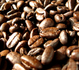

Arabica ou robusta : les différences
Lorsque l'on parle de café, il faut distinguer d'un côté l'arabica et le robusta. En effet, ce sont les deux variétés les plus connues. Ces derniers sont cultivés à des altitudes différentes et proviennent d'arbustes différents.
Arabica : c'est le café le plus consommé au monde. Il est cultivé entre 600m et 2000m d'altitude sur l'arbuste « Coffea Arabica ». Il contient moins de caféine que d'autres cafés, ce qui en fait un café plus doux.
Robusta : c'est en Afrique de l'Ouest, centrale, au Brésil et en Indonésie que l'on retrouve le «Coffea Canephora » Il est cultivé jusqu'à 600m d'altitude. Le robusta contient plus de caféine qu'un café comme l'arabica et est plus corsé que ce dernier.
L'Arabusta : est un café hybride il garde les arômes de l'arabica et peut être cultivé avec les caractéristiques du robusta c'est-à-dire à basse altitude. L'Arabusta est une appellation très controversée aujourd'hui.
Moka d'Éthiopie : Cultivé à partir de 1200m d'altitude en Ethiopie, il contient peu de caféine. Café légèrement acidulé, le Moka d'Ethiopie en grains ou moulu est un café doux, 100% arabica.